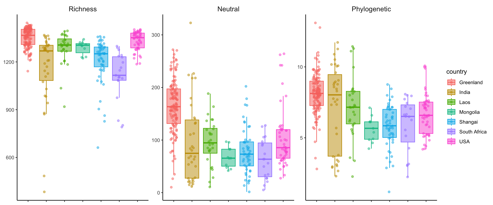
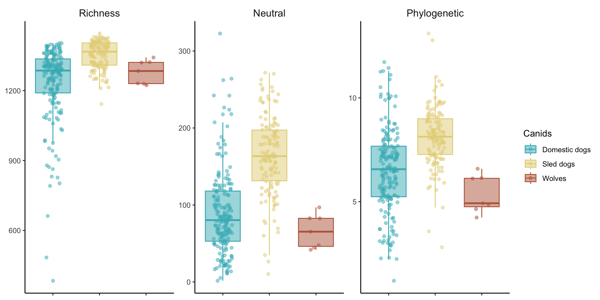

Chapter 6 Alpha diversity
load("data/data.Rdata")
load("data/alpha_all.RData")
genome_metadata <- genome_metadata %>%
mutate(phylum = case_when(
phylum == "Bacillota_A" ~ "Bacillota",
phylum == "Bacillota_C" ~ "Bacillota",
phylum == "Bacillota_B" ~ "Bacillota",
phylum == "Bacillota_I" ~ "Bacillota",
TRUE ~ phylum))
remove_sled <- read_csv("data/sample_metadata.csv") %>%
filter(season=="winter")
sample_metadata <- sample_metadata %>%
mutate(country = if_else(country == "Shangai domestic dog", "Shangai", country)) %>%
filter(!sample %in% remove_sled$sample) %>%
mutate(
dog_type = case_when(
breed == "Wolf" ~ "wolf",
country == "Greenland" ~ "sled_dog",
TRUE ~ "domestic"
)
)
genome_counts_filt <- genome_counts_filt %>%
select(one_of(c("genome",sample_metadata$sample)))%>%
filter(rowSums(. != 0, na.rm = TRUE) > 0) %>%
select_if(~!all(. == 0))
genome_metadata <- genome_metadata %>%
semi_join(., genome_counts_filt, by = "genome") %>%
arrange(match(genome,genome_counts_filt$genome))
genome_tree <- keep.tip(genome_tree, tip=genome_metadata$genome)richness <- genome_counts_filt %>%
column_to_rownames(var = "genome") %>%
dplyr::select(where(~ !all(. == 0))) %>%
hilldiv(., q = 0) %>%
t() %>%
as.data.frame() %>%
dplyr::rename(richness = 1) %>%
rownames_to_column(var = "sample")
neutral <- genome_counts_filt %>%
column_to_rownames(var = "genome") %>%
dplyr::select(where(~ !all(. == 0))) %>%
hilldiv(., q = 1) %>%
t() %>%
as.data.frame() %>%
dplyr::rename(neutral = 1) %>%
rownames_to_column(var = "sample")
phylogenetic <- genome_counts_filt %>%
column_to_rownames(var = "genome") %>%
dplyr::select(where(~ !all(. == 0))) %>%
hilldiv(., q = 1, tree = genome_tree) %>%
t() %>%
as.data.frame() %>%
dplyr::rename(phylogenetic = 1) %>%
rownames_to_column(var = "sample")
alpha_div <- richness %>%
full_join(neutral, by = join_by(sample == sample)) %>%
full_join(phylogenetic, by = join_by(sample == sample))6.1 Countries
alpha_div %>%
pivot_longer(-sample, names_to = "metric", values_to = "value") %>%
mutate(metric=factor(metric,levels=c("richness","neutral","phylogenetic", "functional"))) %>%
left_join(sample_metadata, by = join_by(sample == sample)) %>%
ggplot(aes(y = value, x = country, group=country, color=country, fill=country)) +
geom_boxplot(alpha = 0.5, outlier.shape = NA) +
geom_jitter(width = 0.2, alpha = 0.5) +
facet_wrap(. ~factor(metric, labels=c("richness" = "Richness", "neutral" = "Neutral", "phylogenetic" = "Phylogenetic")), scales = "free", ncol = 5) +
coord_cartesian(xlim = c(1, NA)) +
theme_classic() +
theme(
strip.background = element_blank(),
strip.text = element_text(size =12, lineheight = 0.6),
panel.grid.minor.x = element_line(size = .1, color = "grey"),
axis.title.x = element_blank(),
axis.title.y = element_blank(),
axis.text.x = element_blank()
)
alpha_div %>%
pivot_longer(-sample, names_to = "metric", values_to = "value") %>%
mutate(metric=factor(metric,levels=c("richness","neutral","phylogenetic"))) %>%
left_join(sample_metadata, by = "sample") %>%
group_by(metric) %>%
kruskal_test(value ~ country) %>%
adjust_pvalue(method = "BH") %>%
filter(p.adj < 0.05) %>%
tt()| metric | .y. | n | statistic | df | p | method | p.adj |
|---|---|---|---|---|---|---|---|
| richness | value | 322 | 132.27768 | 6 | 4.26e-26 | Kruskal-Wallis | 1.278e-25 |
| neutral | value | 322 | 123.92041 | 6 | 2.44e-24 | Kruskal-Wallis | 3.660e-24 |
| phylogenetic | value | 322 | 87.97157 | 6 | 7.99e-17 | Kruskal-Wallis | 7.990e-17 |
alpha_div %>%
pivot_longer(-sample, names_to = "metric", values_to = "value") %>%
mutate(metric=factor(metric,levels=c("richness","neutral","phylogenetic")))%>%
left_join(sample_metadata, by = "sample") %>%
group_by(metric) %>%
wilcox_test(value ~ country, p.adjust.method = "BH")%>%
filter(p.adj < 0.05)# A tibble: 34 × 10
metric .y. group1 group2 n1 n2 statistic p p.adj p.adj.signif
<fct> <chr> <chr> <chr> <int> <int> <dbl> <dbl> <dbl> <chr>
1 richness value Greenland India 130 34 3814. 7.89e-11 5.52e-10 ****
2 richness value Greenland Laos 130 28 2690. 7.44e- 5 1.95e- 4 ***
3 richness value Greenland Mongolia 130 11 1156. 6.98e- 4 1 e- 3 **
4 richness value Greenland Shangai 130 51 5894. 4.28e-16 8.99e-15 ****
5 richness value Greenland South Africa 130 19 2396. 4.05e-11 4.25e-10 ****
6 richness value Greenland USA 130 49 3930. 1.6 e- 2 2.3 e- 2 *
7 richness value India Laos 34 28 283 6 e- 3 1 e- 2 *
8 richness value India USA 34 49 300. 7.98e- 7 2.79e- 6 ****
9 richness value Laos Shangai 28 51 1038. 9.31e- 4 2 e- 3 **
10 richness value Laos South Africa 28 19 464 1.85e- 5 5.55e- 5 ****
# ℹ 24 more rowsNo significant differences Note: Greenland only not different to USA (richness) and India (phylogenetic)
alpha_div %>%
pivot_longer(-sample, names_to = "metric", values_to = "value") %>%
mutate(metric=factor(metric,levels=c("richness","neutral","phylogenetic")))%>%
left_join(sample_metadata, by = "sample") %>%
group_by(metric) %>%
wilcox_test(value ~ country, p.adjust.method = "BH")%>%
filter(p.adj > 0.05)# A tibble: 29 × 10
metric .y. group1 group2 n1 n2 statistic p p.adj p.adj.signif
<fct> <chr> <chr> <chr> <int> <int> <dbl> <dbl> <dbl> <chr>
1 richness value India Mongolia 34 11 118 0.07 0.078 ns
2 richness value India Shangai 34 51 862. 0.971 0.971 ns
3 richness value India South Africa 34 19 430 0.048 0.056 ns
4 richness value Laos Mongolia 28 11 168 0.673 0.707 ns
5 neutral value India Laos 34 28 427 0.495 0.646 ns
6 neutral value India Mongolia 34 11 212 0.523 0.646 ns
7 neutral value India Shangai 34 51 911 0.696 0.738 ns
8 neutral value India South Africa 34 19 384 0.265 0.423 ns
9 neutral value India USA 34 49 716 0.282 0.423 ns
10 neutral value Laos Mongolia 28 11 221 0.037 0.07 ns
# ℹ 19 more rows6.2 Dog group
alpha_div %>%
pivot_longer(-sample, names_to = "alpha", values_to = "value") %>%
left_join(sample_metadata, by = join_by(sample == sample)) %>%
group_by(alpha) %>%
summarise(
total_mean = mean(value, na.rm = T),
total_sd = sd(value, na.rm = T),
Dog_mean = mean(value[dog_type == "domestic"], na.rm = T),
Dog_sd = sd(value[dog_type == "domestic"], na.rm = T),
Sled_dog_mean = mean(value[dog_type == "sled_dog"], na.rm = T),
Sled_dog_sd = sd(value[dog_type == "sled_dog"], na.rm = T),
Wolf_mean = mean(value[dog_type == "wolf"], na.rm = T),
Wolf_sd = sd(value[dog_type == "wolf"], na.rm = T)
) %>%
mutate(
total = str_c(round(total_mean, 3), "±", round(total_sd, 3)),
Domestic_dogs = str_c(round(Dog_mean, 3), "±", round(Dog_sd, 3)),
Sled_dogs = str_c(round(Sled_dog_mean, 3), "±", round(Sled_dog_sd, 3)),
Wolves = str_c(round(Wolf_mean, 3), "±", round(Wolf_sd, 3))
) %>%
arrange(-Sled_dog_mean) %>%
dplyr::select(alpha, total, Domestic_dogs, Sled_dogs, Wolves) %>%
tt()| alpha | total | Domestic_dogs | Sled_dogs | Wolves |
|---|---|---|---|---|
| richness | 1283.267±141.237 | 1234.216±162.371 | 1353.315±59.3 | 1278.714±50.767 |
| neutral | 119.192±65.185 | 89.388±55.592 | 164.471±51.469 | 65.957±21.913 |
| phylogenetic | 7.131±1.986 | 6.508±2.042 | 8.113±1.457 | 5.358±0.902 |
type_colors <- c('#41B6C0','#E5D388',"#bb6749")
new_labels <- c(
"domestic" = "Domestic dogs",
"sled_dog" = "Sled dogs",
"wolf" = "Wolves"
)
alpha_div %>%
pivot_longer(-sample, names_to = "metric", values_to = "value") %>%
mutate(metric = factor(
metric,
levels = c("richness", "neutral", "phylogenetic", "functional")
)) %>%
left_join(sample_metadata, by = join_by(sample == sample)) %>%
ggplot(aes(
y = value,
x = dog_type,
group = dog_type,
color = dog_type,
fill = dog_type
)) +
geom_boxplot(alpha = 0.5, outlier.shape = NA) +
geom_jitter(width = 0.2, alpha = 0.5) +
scale_color_manual(
name = "Canids",
values = type_colors,
labels = new_labels
) +
scale_fill_manual(
name = "Canids",
values = type_colors,
labels = new_labels
) +
facet_wrap(. ~ factor(
metric,
labels = c(
"richness" = "Richness",
"neutral" = "Neutral",
"phylogenetic" = "Phylogenetic"
)
),
scales = "free",
ncol = 5) +
coord_cartesian(xlim = c(1, NA)) +
theme_classic() +
theme(
strip.background = element_blank(),
strip.text = element_text(size = 12, lineheight = 0.6),
panel.grid.minor.x = element_line(size = .1, color = "grey"),
axis.title.x = element_blank(),
axis.title.y = element_blank(),
axis.text.x = element_blank()
)
alpha_div %>%
pivot_longer(-sample, names_to = "metric", values_to = "value") %>%
mutate(metric=factor(metric,levels=c("richness","neutral","phylogenetic"))) %>%
left_join(sample_metadata, by = "sample") %>%
group_by(metric) %>%
kruskal_test(value ~ dog_type) %>%
adjust_pvalue(method = "BH") %>%
filter(p.adj < 0.05) %>%
tt()| metric | .y. | n | statistic | df | p | method | p.adj |
|---|---|---|---|---|---|---|---|
| richness | value | 322 | 81.48955 | 2 | 2.02e-18 | Kruskal-Wallis | 3.030e-18 |
| neutral | value | 322 | 116.49599 | 2 | 5.05e-26 | Kruskal-Wallis | 1.515e-25 |
| phylogenetic | value | 322 | 66.70117 | 2 | 3.28e-15 | Kruskal-Wallis | 3.280e-15 |
alpha_div %>%
pivot_longer(-sample, names_to = "metric", values_to = "value") %>%
mutate(metric=factor(metric,levels=c("richness","neutral","phylogenetic")))%>%
left_join(sample_metadata, by = "sample") %>%
group_by(metric) %>%
wilcox_test(value ~ dog_type, p.adjust.method = "BH")%>%
filter(p.adj < 0.05)# A tibble: 6 × 10
metric .y. group1 group2 n1 n2 statistic p p.adj p.adj.signif
<fct> <chr> <chr> <chr> <int> <int> <dbl> <dbl> <dbl> <chr>
1 richness value domestic sled_dog 185 130 4926. 4.69e-19 1.41e-18 ****
2 richness value sled_dog wolf 130 7 756. 3 e- 3 5 e- 3 **
3 neutral value domestic sled_dog 185 130 3634 5.45e-26 1.64e-25 ****
4 neutral value sled_dog wolf 130 7 868 5.52e- 5 8.28e- 5 ****
5 phylogenetic value domestic sled_dog 185 130 5917 1.66e-14 4.98e-14 ****
6 phylogenetic value sled_dog wolf 130 7 866 6 e- 5 9 e- 5 ****